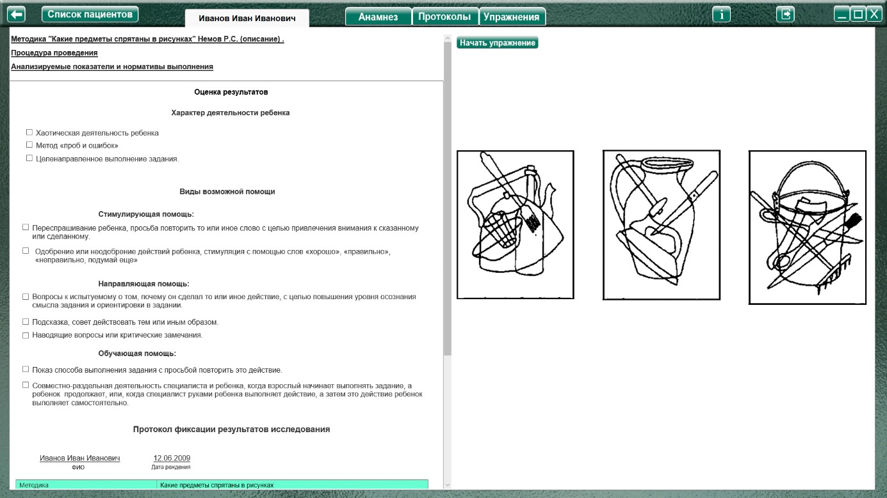
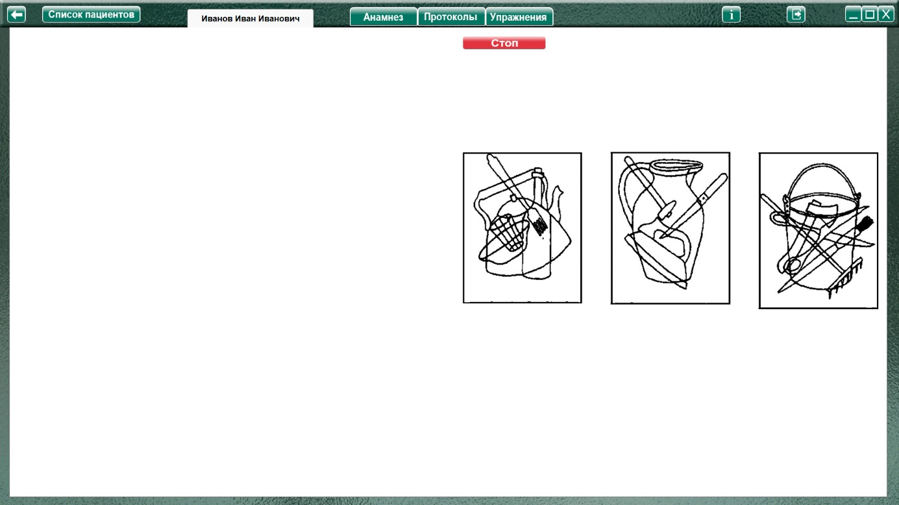
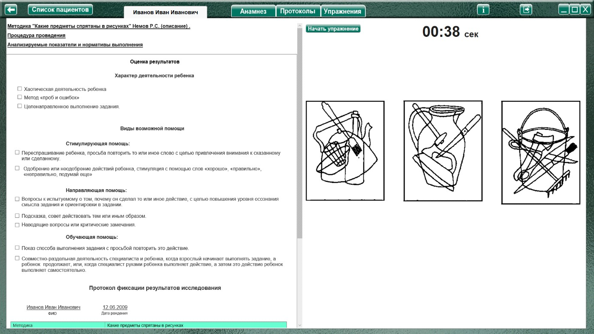

Методика «Какие предметы спрятаны в рисунках» (Немов Р.С.)
Методика "Какие предметы спрятаны в рисунках" (Немов Р.С.) описание
Процедура проведения.
Ребенку объясняют, что ему будут показаны несколько контурных рисунков, в которых как бы «спрятаны» многие известные ему предметы. Далее ребенку представляют рис. 4 и просят
последовательно назвать очертания всех предметов, «спрятанных» в трех его частях: 1, 2 и 3.
Время выполнения задания ограничивается одной минутой. Если за это время ребенок не сумел полностью выполнить задание, то его прерывают. Если ребенок справился с заданием меньше чем за 1 минуту, то фиксируют время, затраченное на выполнение задания.
Примечание. Если проводящий психодиагностику видит, что ребенок начинает спешить и преждевременно, не найдя всех предметов, переходит от одного рисунка к другому, то он должен остановить ребенка и попросить поискать еще на предыдущем рисунке. К следующему рисунку можно переходить лишь тогда, когда будут найдены все предметы, имеющиеся на предыдущем рисунке. Общее число всех предметов, «спрятанных» на рисунках 1, 2 и 3, составляет 14.
Анализируемые показатели и нормативы выполнения
10 баллов — ребенок назвал все 14 предметов, очертания которых имеются на всех трех рисунках,
затратив на это меньше чем 20 сек.
8-9 баллов — ребенок назвал все 14 предметов, затратив на их поиск от 21 до 30 сек.
6-7 баллов — ребенок нашел и назвал все предметы за время от 31 до 40 сек.
4-5 баллов — ребенок решил задачу поиска всех предметов за время от 41 до 50 сек.
2-3 балла — ребенок справился с задачей нахождения всех предметов за время от 51 до 60 сек.
0-1 балл —— за время, большее чем 60 сек, ребенок не смог решить задачу по поиску и названию всех
14 предметов, «спрятанных» в трех частях рисунка.
Выводы об уровне развития
10 баллов - очень высокий.
8-9 баллов - высокий.
4-7 баллов - средний.
2-3 балла - низкий.
0-1 балл - очень низкий.
Оценка результатов
Характер деятельности ребенка:
Виды возможной помощи:
Стимулирующая помощь
Направляющая помощь:
Обучающая помощь:
Протокол фиксации результатов исследования
_________________________________ _______________
ФИО Дата рождения
Методика |
Какие предметы спрятаны в рисунках |
Автор методики (адаптации, модификации) |
Немов Р.С. |
Цель: |
Диагностика восприятия |
Дата / специалист |
|
Результат: баллы (макс.) / вывод об уровне развития |
|
Примечание |
|
| Процесс выполнения диагностической методики | |
Характер деятельности ребенка |
Характер помощи |
Баллы
|
Логика заполнения протокола
Заполняется автоматически
Имя специалиста – логин при входе в программу.
Дата – дата и время прохождения упражнения в формате дд.мм.гггг. чч:мм
Результат: баллы (макс.) / - баллы дублируются из ячейки «баллы» (макс.10 баллов)
/ вывод об уровне развития – согласно кол-ву баллов
10 баллов - очень высокий.
8-9 баллов - высокий.
4-7 баллов - средний.
2-3 балла - низкий.
0-1 балл - очень низкий.
Ячейки «Характер деятельности ребенка», «Характер помощи» заполняются в зависимости от выбора специалиста в поле «Оценка результатов» либо самостоятельно.
Баллы – согласно времени выполнения:
10 баллов — ребенок назвал все 14 предметов, очертания которых имеются на всех трех рисунках,
затратив на это меньше чем 20 сек.
8-9 баллов — ребенок назвал все 14 предметов, затратив на их поиск от 21 до 30 сек.
6-7 баллов — ребенок нашел и назвал все предметы за время от 31 до 40 сек.
4-5 баллов — ребенок решил задачу поиска всех предметов за время от 41 до 50 сек.
2-3 балла — ребенок справился с задачей нахождения всех предметов за время от 51 до 60 сек.
0-1 балла— за время, большее чем 60 сек, ребенок не смог решить задачу по поиску и названию всех
14 предметов, «спрятанных» в трех частях рисунка.
Остальные ячейки заполняются (правятся) специалистом самостоятельно.
Выполнение упражнения

После ознакомления ребенка с заданием нажать кнопку «Начать упражнение» (для запуска секундомера и открытия упражнения на весь экран).

Выполнить упражнение согласно пункту «Процедура проведения» После выполнения задания нажать кнопку «Стоп», останавливая секундомер и открывая поле оценки результата.

При необходимости выбрать характер деятельности, виды помощи, и нажать кнопку «Сформировать протокол». Произвести оценку результата (заполнить оставшиеся ячейки протокола) согласно пункту «Анализируемые показатели и нормативы выполнения».